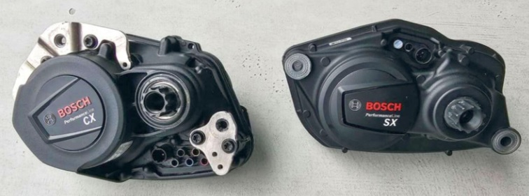
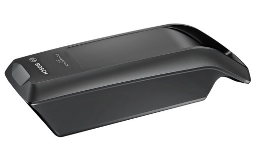
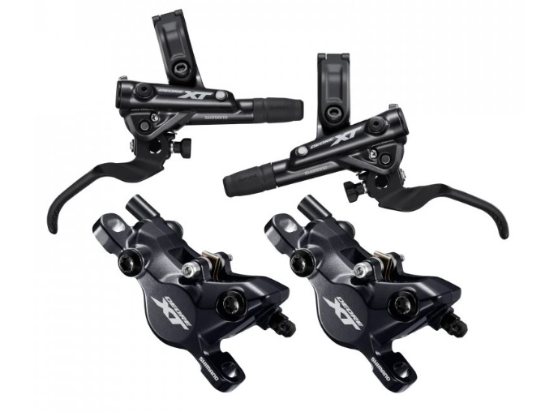
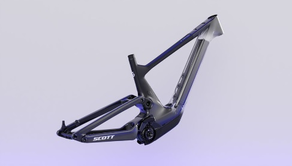
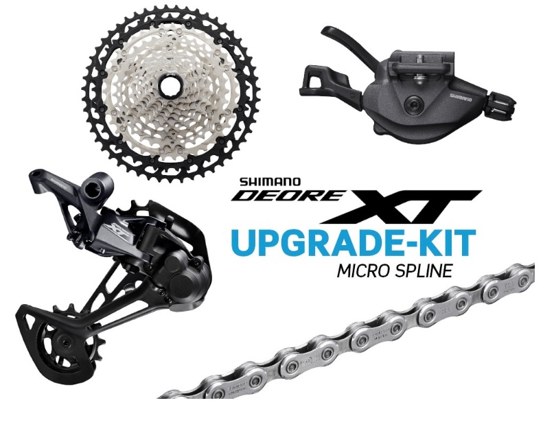

E-bike
Az e-bike, vagy elektromos kerékpár napjaink egyik leggyorsabban fejlődő kerékpártípusa, amely egyesíti a hagyományos pedálozás élményét az elektromos rásegítés kényelmével. Ideális választás lehet városi közlekedéshez, túrázáshoz vagy akár komolyabb terepre is, típustól függően. A motoros rásegítésnek köszönhetően nagyobb távolságok is könnyebben teljesíthetők, különösen emelkedőkön vagy erősebb ellenszélben.
Fő jellemzők
- Motor és akkumulátor: Az e-bike lelke a beépített villanymotor, amely lehet első, hátsó vagy középmotoros elrendezésű – utóbbi a legelterjedtebb a jobb súlyelosztás miatt. A motor teljesítménye általában 250 W, ami megfelel az európai szabályozásnak. Az akkumulátor a vázban vagy annak tetején/mellett kap helyet, és kapacitása jellemzően 400–750 Wh között mozog. Egy töltéssel 40–120 km-es hatótáv is elérhető, a terepviszonyoktól és a rásegítés szintjétől függően.
- Teleszkóp: A rugóút típustól függően változik. A városi e-bike-ok általában első teleszkóppal rendelkeznek 50–80 mm rugóúttal, míg a terepre szánt e-MTB-k akár 120–160 mm rugóúttal is elérhetők, elöl és hátul egyaránt.
- Fék: Az e-bike-okhoz a nagyobb sebesség és tömeg miatt erősebb fékrendszer szükséges. A hidraulikus tárcsafékek az alapfelszereltség részét képezik, és megbízható, stabil fékezést nyújtanak bármilyen körülmények között.
- Vázanyag: Mivel az e-bike-oknál az akkumulátor és a motor plusz súlyt jelent, a váz kialakítása masszívabb, de a modern technológiának köszönhetően nem túl nehéz. A leggyakoribb anyag az alumínium, de prémium modelleknél a karbonváz sem ritka. A vázgeometria a stabilitásra és kényelemre van optimalizálva.
- Kormány: A kormány típusa az e-bike felhasználási területéhez igazodik. Városi modelleknél jellemző a magas, ívelt kormány a kényelmes testtartás érdekében, míg a sportosabb, trekking vagy e-MTB modellek egyenes, szélesebb kormánnyal rendelkeznek a jobb irányíthatóságért. A kormányon található kijelzőn látható az akkumulátor töltöttsége, a rásegítés szintje és sok esetben a sebesség is.
- VáltásA teljes felfüggesztésű MTB-k is főleg 1x rendszerrel dolgoznak, gyakran 12 sebességes hátsó váltóval, ami kiválóan alkalmas technikás, változatos terepre. A váltókar finoman reagál, a váltás gyors és pontos, még saras környezetben is. Ezek általában már elektromos váltók, amiket akkumulátor működtet. Sárban és télen nagy előnyük van bowdenes váltókkal szemben. Nem állítódnak el, cserébe drágábbak.
- Dropper: A dropper nyeregcső az e-MTB kategóriában kezd elterjedni, mivel technikásabb terepeken nagy segítséget jelent. Lehetővé teszi, hogy a nyereg egy gombnyomással leengedhető legyen, így lejtőn vagy akadályos útszakaszon stabilabb pozícióban maradhat a bringás.
 



